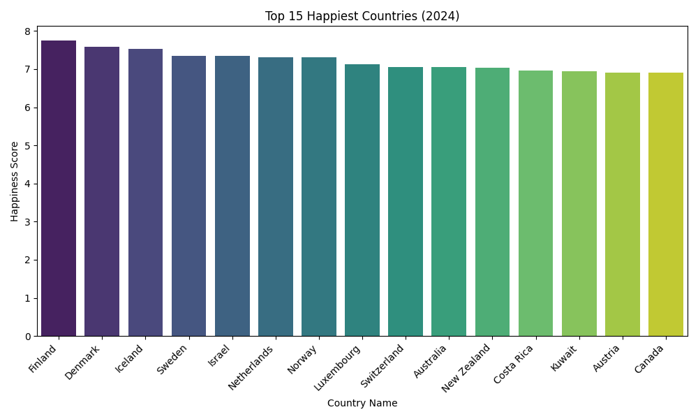
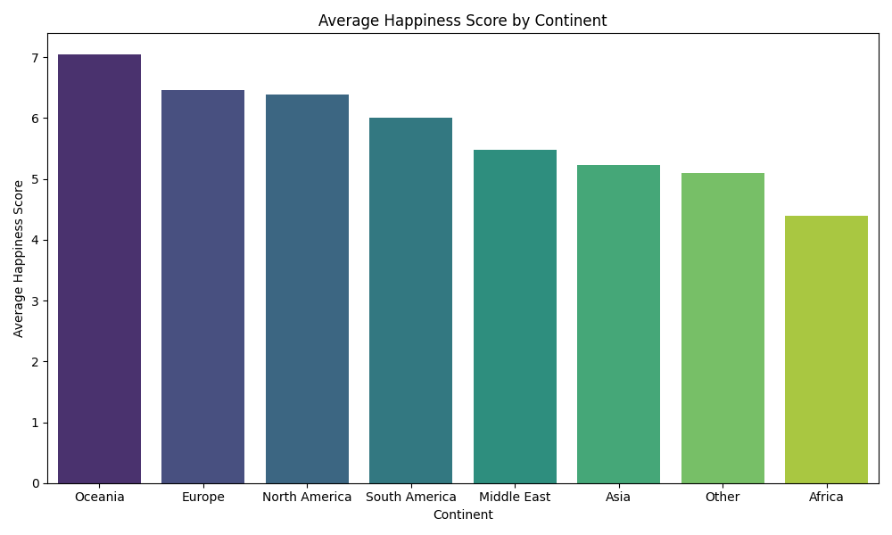
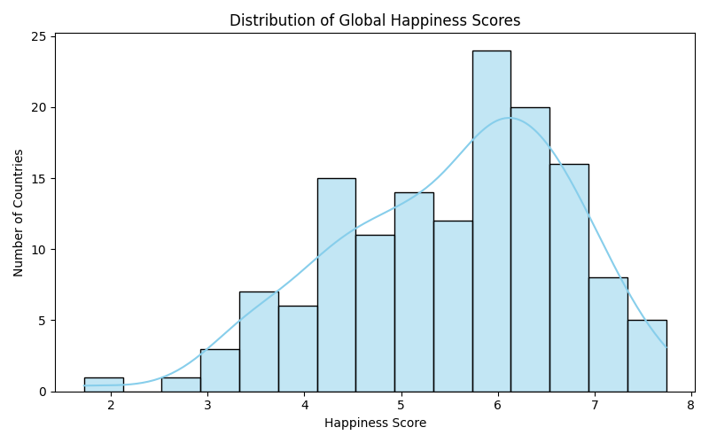
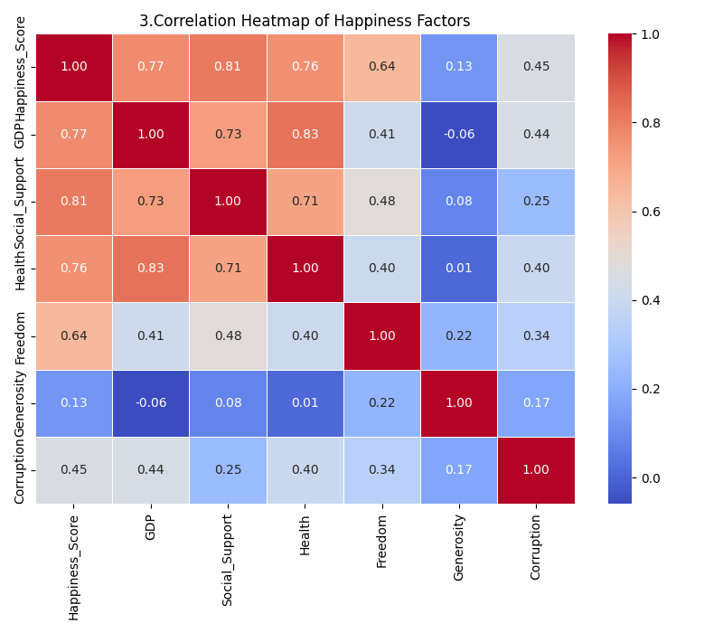
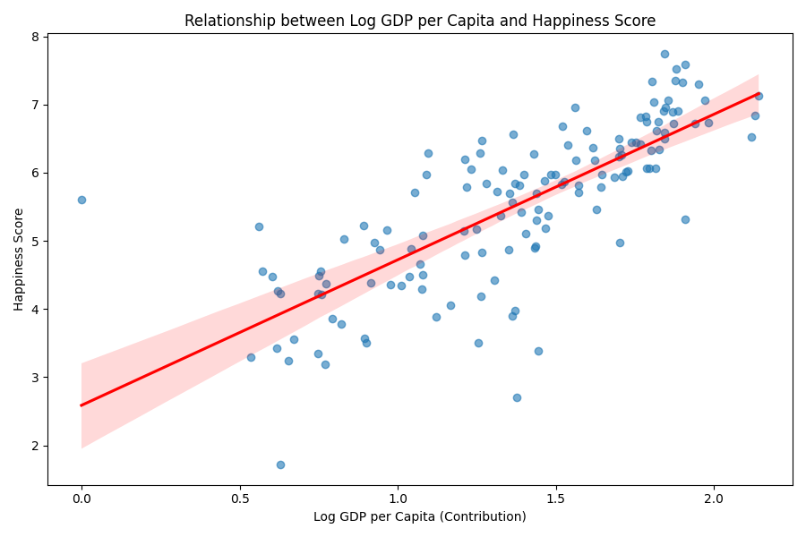
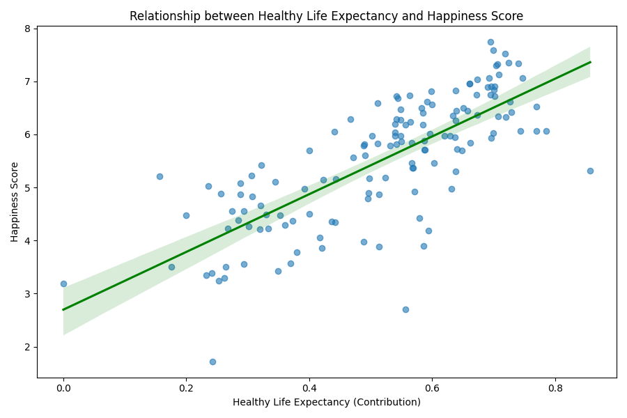
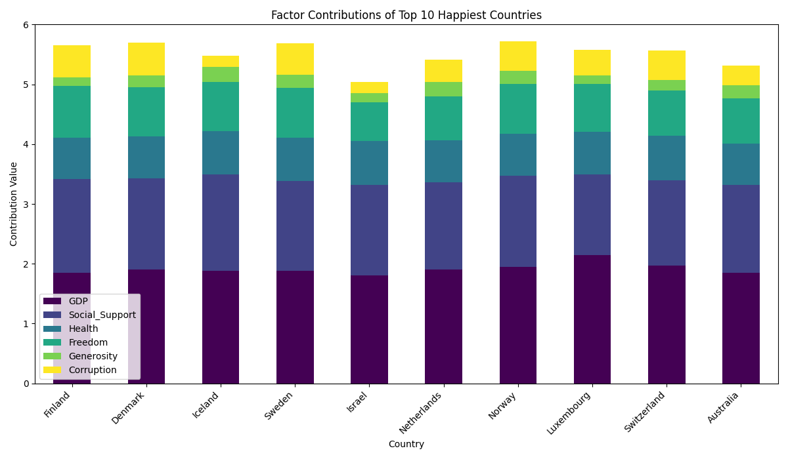
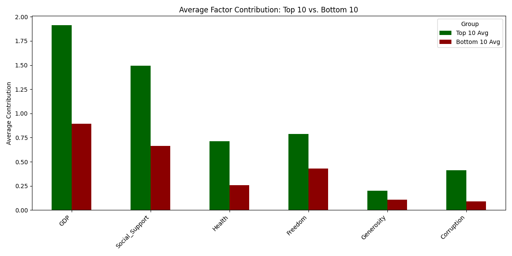
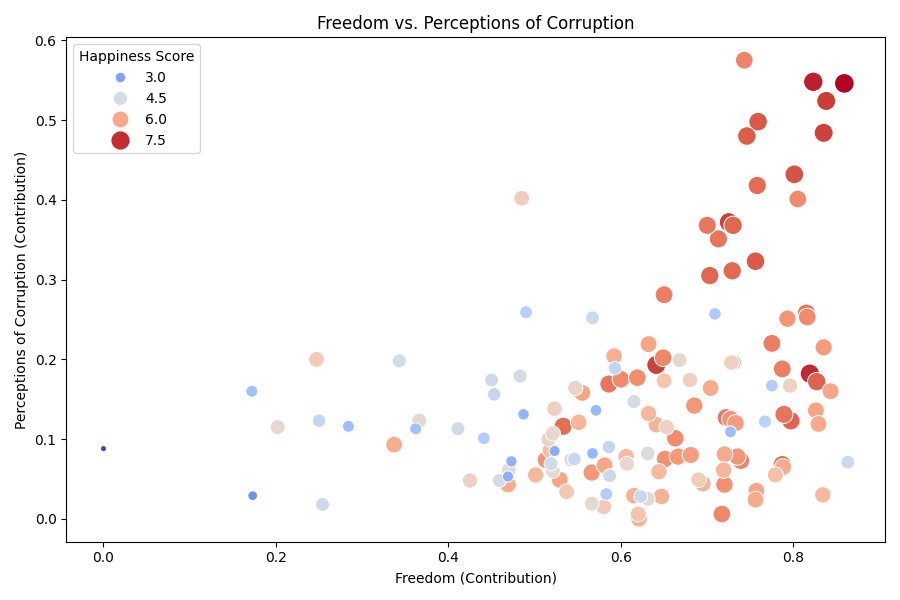
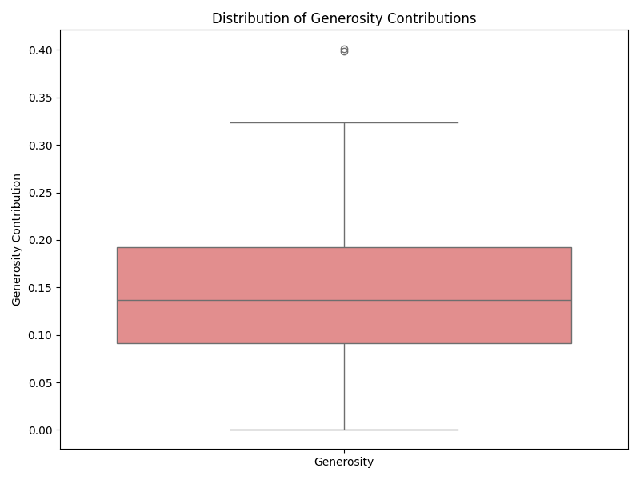

대학생이 된 이후 주변 친구들과 대화를 나누다 보면 “행복하게 살고 있는가?”, “요즘 삶은 만족스러운가?”와 같이 얘기를 해본 적이 있습니다. 학업, 취업 준비, 인간관계 등 여러 요인이 겹치면서 스트레스를 호소하는 친구들이 많았고, 경제적 문제와 별개로 삶의 만족도가 낮다고 느끼는 경우도 적지 않았습니다.
예전에 보던 JTBC ‘비정상 회담’에서 북유럽 국가들의 높은 삶의 만족도가 소개된 것이 떠올랐습니다. 경제력뿐 아니라 복지, 신뢰, 공동체 의식 등 다양한 요소가 행복에 영향을 준다는 점이 인상 깊었습니다. 그래서 행복을 좌우하는 요인이 무엇인지 데이터를 통해 분석해보고자 했습니다.

북유럽의 압도적 강세: 핀란드(1위)를 필두로 덴마크, 아이슬란드, 스웨덴 등 북유럽 국가들이 최상위권을 독식하고 있습니다.
북유럽 9개국, 오세아니아 2개국, 중동 2개국, 북미 1개국, 기타 1개국이 상위권을 차지했습니다.

행복의 지역적 차이가 있습니다. 유럽과 오세아니아, 북미 지역은 평균 6점 이상의 높은 행복도를 보이는 반면, 아프리카와 일부 아시아 지역은 상대적으로 낮은 점수를 기록했습니다. 주로 선진국이 많은 대륙이 더 높은 점수를 보입니다.

전 세계 행복 점수는 5점과 6점 사이에 가장 많이 밀집된 정규 분포 형태를 띱니다. 7점 이상의 '매우 행복한' 국가와 3점 대의 '매우 불행한' 국가는 소수이며, 대다수의 국가는 '보통의 행복' 수준을 유지하고 있음을 알 수 있습니다.

행복 점수는 사회적 지원, GDP, 기대 수명 세 가지 요인과 강한 양의 상관관계를 보이며 핵심 요소로 작용했습니다.
반면, 관용과 부패인식은 상대적으로 낮은 상관계수를 기록하여, 물질적 및 제도적 기반이 행복 형성에 더 직접적인 역할을 한다는 점을 시사합니다.

"돈으로 행복을 살 수 있는가?" 데이터는 일정 부분 "그렇다"고 답합니다. 1인당 GDP(로그 스케일)가 증가할수록 행복 점수도 뚜렷하게 우상향하는 선형 관계를 보입니다. 경제적 풍요는 기본적인 의식주 해결과 삶의 질 향상을 위한 가장 기초적인 토대이기 때문입니다.

건강 기대 수명 역시 행복도와 매우 밀접한 양의 상관관계를 가집니다. 단순히 오래 사는 것이 아니라, '건강하게' 오래 살 수 있는 기대를 가진 국민들의 삶의 만족도가 높다는 것을 보여줍니다.

가장 행복한 나라들의 비결은 무엇일까요? 보라색 막대(GDP+사회적 지원)가 기본 점수의 절반 이상을 차지하며 튼튼한 기반을 형성하고 있습니다. 하지만 순위를 가르는 결정적인 '한 끗'은 초록색(자유)과 노란색(부패 인식)에서 나옵니다. 즉, 먹고사는 문제가 해결된 후에는 '내 삶을 선택할 자유'와 '청렴한 사회'가 더 높은 행복을 만듭니다.

상위권과 하위권 국가의 행복 기여 요인 별 평균 값입니다.
상위 10개국은 대부분의 행복 기여 요인에서 상대적으로 높은 값을 보였으며,
하위 10개국은 여러 항목에서 상위권 국가 평균의 절반 수준에 미치지 못하는 지표가 확인됩니다.
이를 통해 국가 간 행복 수준 격차가 단일 요소가 아닌 여러 요인의 누적된 차이에서 비롯된다는 점을 확인할 수 있습니다.

행복한 나라는 자유롭고 투명합니다. 그래프 상단(행복 점수가 높은 붉은 점들)에 위치한 국가들은 대체로 '높은 자유도'와 '낮은 부패 인식' 영역에 몰려 있습니다. "내 삶을 주도적으로 살 수 있다"는 믿음과 "사회가 공정하다"는 신뢰가 행복의 중요한 열쇠입니다.

관용 점수는 대부분 낮은 구간에 밀집되어 있지만, 일부 국가들은 상대적으로 높은 값을 기록하며 분포 상단에 위치하는 특징을 보입니다.
해당 이상치는 전체적인 패턴과 다른 사회적·문화적 요인이 존재할 수 있음을 시사합니다. 특히 경제 수준과 관용 점수 사이에 뚜렷한 상관관계가 보이지 않아, 관용 지표는 국가별 특수한 요인에 따라 크게 달라질 수 있음을 확인할 수 있습니다.
데이터 분석 결과, 행복은 개인의 마음가짐뿐만 아니라 구체적인 사회 시스템(경제, 복지, 투명성)에 크게 의존하고 있음을 확인했습니다. GDP와 사회적 지원은 행복을 위한 '필수 조건'이며, 자유와 신뢰는 '충분 조건'입니다. 결국 우리가 지향해야 할 행복한 사회는, 개인이 안전하게 보호받으면서도 자유롭게 꿈을 펼칠 수 있는 신뢰 공동체임을 데이터는 말해주고 있습니다.